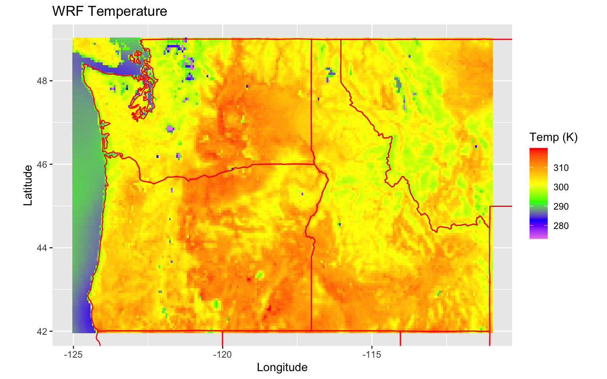

Static Layered Plots
Mazama Science
8/11/2020
Source:vignettes/articles/Static_Layered_Plots.Rmd
Static_Layered_Plots.RmdThis article will walk through the process of plotting meteorological data using the AirFireWRF package.
Plotting Outline
The Weather Research and Forecast (WRF) model is used to predict meteorological conditions over the Earth. These forecasts output grids of spatial points that that track variables like temperature, wind velocity, moisture levels, and many others. The AirFireWRF package provides an easy way to convert these collections of points into Raster objects so they can then be plotted with additional features. For instance, you can build a plot with a Raster for a WRF variable, a vector field for WRF vector components, and layers for spatial points and polygons. Let’s outline an example plot to showcase these different features.
WRF Plotting Example
Our plot will cover Washington, Oregon, and Idaho on July 15, 2020, and will include the following layers:
- A raster for temperature
- A vector field for wind velocity
- Spatial points for air quality monitors
- Spatial polygons for state boundaries
To start with, let’s load the temperature and wind velocity data from a July 15, 2020 WRF file (recent runs available here). WRF data takes up quite a bit of space, so this article will load in an example dataset provided in the package. If we were to use a WRF NetCDF file already on our machine though, we would first define a grid and then use wrf_load() to create RasterBricks for our desired variables. For temperature we would specify the ‘T2’ WRF variable which gives us a RasterBrick with a single layer. For wind velocity, we would specify the ‘U10’ and ‘V10’ WRF variables (North & East vector components) which give us a RasterBrick with two layers. Here is an example of what that would look like:
library(AirFireWRF)
# Define a common Raster grid
xlim <- c(-125, -111)
ylim <- c(42, 49)
res <- 0.06
# A RasterBrick with a single layer for elevation
tempRaster <- wrf_load(
localPath = '~/Data/WRF/wrfout_d3-2020071512-f07-0000.nc',
varName = 'T2',
xlim = xlim,
ylim = ylim,
res = res
)
# A RasterBrick with layers for both U and V wind vector components
windRaster <- wrf_load(
localPath = '~/Data/WRF/wrfout_d3-2020071512-f07-0000.nc',
varName = c('U10', 'V10'),
xlim = xlim,
ylim = ylim,
res = res
)But for now, let’s use an example Raster already included in the package:
library(raster) library(AirFireWRF) library(raster) raster <- AirFireWRF::example_PNW # Extract the underlying grid these Rasters are using extent <- raster::extent(raster) xlim <- c(round(extent@xmin), round(extent@xmax)) ylim <- c(round(extent@ymin), round(extent@ymax)) res <- round(mean(raster::res(raster)), digits = 2)
We can make some quick visualizations of these Rasters using the RasterVis package. For temperature, we can use the levelPlot() function:
rasterVis::levelplot(raster[["TSK"]], main = 'Temperature (K)', margin = FALSE)

And for wind velocity, we can use the North and East vector components in vectorplot() to make a vector field:
rasterVis::vectorplot( raster::brick(raster[["U10"]], raster[["V10"]]), isField = 'dXY', narrows = 500, length = 0.05, aspX = 0.07, aspY = 0.07, col.arrows = 'white' )

It would be nice if we could combine these plots along with additional features like state borders and points for air quality monitors. We can do this using AirFireWRF’s layered plotting capabilities. AirFireWRF provides a several helpful layer_*() functions which produce GGPlot elements much like geom_*(). The layers currently available are:
layer_rasterlayer_vectorFieldlayer_pointslayer_states
Integrating our meteorological data with GGPlot can make our visualizations much more flexible. We can make a plot by creating an empty GGplot object, then “+” on our layer_* elements and any other GGplot elements we might want, such as labels, color palettes, grid limits, etc.
Let’s draw the temperature Raster again using this approach:
temp_plot <- # Define an empty plotting space ggplot2::ggplot() + # Draw the temperature raster layer_raster( raster = raster[["TSK"]] ) + # Crop the plot area ggplot2::coord_fixed( ratio = 1.4, xlim = xlim, ylim = ylim ) + # Set raster color palette ggplot2::scale_fill_gradientn( colors = c('violet', 'blue', 'green', 'yellow', 'orange', 'red'), na.value = 'transparent' ) + # Set the plot labels ggplot2::labs( title = 'WRF Temperature', x = 'Longitude', y = 'Latitude', fill = 'Temp (K)' ) temp_plot

Now we can start adding additional layers to help understand this information. Let’s draw the same plot, but now with state borders:
temp_state_plot <- temp_plot + # Draw state borders layer_states( xlim = xlim, ylim = ylim, color = 'red' ) temp_state_plot

That’s a little better! Let’s also make our wind Rasters a bit more helpful by using them to draw vector arrows with layer_vectorField(). This function assumes the provided RasterBrick has two layers representing the U (North) and V (East) components of vectors:
temp_state_wind_plot <- temp_state_plot + # Draw the wind vector field layer_vectorField( raster = raster, uName = "U10", vName = "V10", arrowCount = 500, arrowColor = 'black', arrowScale = 0.07, arrowHead = 0.06, alpha = 0.8 ) temp_state_wind_plot

Finally, lets plot some monitor air quality readings. We can use the PWFSLSmoke package to collect the July 15, 2020 PM 2.5 readings for monitors in Washington, Oregon, and Idaho:
library(PWFSLSmoke) # Load monitor data monitors <- monitor_load( startdate = "2020-07-15", enddate = "2020-07-16" ) %>% monitor_subset(stateCodes = c('WA', 'OR', 'ID')) # Find each monitor's average reading from July 15, 2020 #means <- monitor_getDailyMean(monitors, startdate = "2020-07-15") means <- monitor_dailyStatistic(monitors, minHours = 16) # Link monitor coordinates and their averages for July 15, 2020 monitorPoints <- data.frame( x = means$meta$longitude, y = means$meta$latitude, value = as.numeric(means$data[1, 2:ncol(means$data)]) ) temp_state_monitors_wind_plot <- temp_state_wind_plot + # Draw the monitor points layer_points( points = monitorPoints ) + # Set the point color palette ggplot2::scale_color_gradient( low = 'white', high = 'black', na.value = 'transparent' ) + ggplot2::labs( color = 'PM 2.5' ) temp_state_monitors_wind_plot
I don’t want the monitor points to cover up the wind vectors though. To fix this I could simply go build off the previous temp_state_plot like:
temp_state_monitors_wind_plot <-
temp_state_plot +
# Draw the monitor points
layer_points(
points = monitorPoints
) +
# Draw the wind vector field
layer_vectorField(
raster = raster,
uName = "U10",
vName = "V10",
arrowCount = 500,
arrowColor = 'black',
arrowScale = 0.08,
arrowHead = 0.06,
alpha = 0.8
)…but let’s take a step back and see what it would look like to create this entire plot at once:
wrfMap <- # Define an empty plotting space ggplot2::ggplot() + # Draw the temperature raster layer_raster( raster = raster[["TSK"]] ) + # Then draw state borders layer_states( xlim = xlim, ylim = ylim, color = 'red' ) + # Then draw the points layer_points( points = monitorPoints ) + # Then draw the wind vector field layer_vectorField( raster = raster, uName = "U10", vName = "V10", arrowCount = 500, arrowColor = 'black', arrowScale = 0.08, arrowHead = 0.06, alpha = 0.8 ) + # Crop the plot area ggplot2::coord_fixed( ratio = 1.4, xlim = xlim, ylim = ylim ) + # Set raster color palette ggplot2::scale_fill_gradientn( colors = c('violet', 'blue', 'green', 'yellow', 'orange', 'red'), na.value = 'transparent' ) + # Set the point color palette ggplot2::scale_color_gradient( low = 'white', high = 'black', na.value = 'transparent' ) + # Set the plot labels ggplot2::labs( title = 'Elevation & Wind Map', x = 'Longitude', y = 'Latitude', fill = 'Temp (K)', color = 'PM 2.5' ) wrfMap

BlueSky Plotting Example
The layer_raster() function can work with Rasters other than those we create through AirFireWRF. For instance, we can also plot BlueSky air quality Rasters from the AirFireModeling package:
library(AirFireModeling) AirFireModeling::setModelDataDir("~/Data/BlueSky") # Load BlueSky model run rasterList <- AirFireModeling::raster_load( modelName = "PNW-4km", modelRun = 2020071500, xlim = xlim, ylim = ylim ) # Extract a single RasterLayer from the BlueSky run RasterBrick smokeRaster <- rasterList$`PNW-4km_2020071500`$X1020.07.16.19.00.00 blueskyMap <- ggplot2::ggplot() + ggplot2::scale_fill_gradientn( colors = c('green', 'yellow', 'orange', 'red', 'maroon'), na.value = 'transparent' ) + layer_raster( raster = smokeRaster ) + layer_states( xlim = xlim, ylim = ylim ) + ggplot2::coord_fixed( ratio = 1.4, xlim = xlim, ylim = ylim ) + ggplot2::labs( title = 'Air QualityMap', x = 'Longitude', y = 'Latitude', fill = 'PM 2.5' ) blueskyMap
It looks like there are a few spots of interest in Washington–particularly around the Tri-cities area with a spot of deep red. Let’s zoom into that region for a better visual and do the following:
- Load and plot a higher resolution BlueSky Raster.
- Load and plot the wind Raster again, but this time with a smaller extent.
- The air quality raster has a few extremely high outlier values, while most of the rest measure less than 2. For the sake of the color scale, let’s remove the lower-valued cells and cap the high ones at 500.
# Define a new grid extent xlim <- c(-120, -118) ylim <- c(46, 47) # Load model run rasterList <- AirFireModeling::raster_load( modelName = "PNW-1.33km", modelRun = 2020071500, xlim = xlim, ylim = ylim ) # Extract a single RasterLayer from the BlueSky run RasterBrick smokeRaster <- rasterList$`PNW-1.33km_2020071500`$X1020.07.16.19.00.00 # Remove low values and cap high values smokeRaster[smokeRaster < 2] <- NA smokeRaster[smokeRaster > 500] <- 500
Now we can plot this information just like we did for the WRF example:
blueskyMap <- ggplot2::ggplot() + # Set raster color palette ggplot2::scale_fill_gradientn( colors = c('green', 'yellow', 'orange', 'red', 'maroon'), na.value = 'transparent' ) + layer_raster( raster = smokeRaster ) + layer_states( xlim = xlim, ylim = ylim ) + # Then draw the wind vector field layer_vectorField( raster = raster, uName = "U10", vName = "V10", arrowCount = 500, arrowColor = 'black', arrowScale = 0.03, arrowHead = 0.06, xlim = xlim, ylim = ylim ) + ggplot2::coord_fixed( ratio = 1.4, xlim = xlim, ylim = ylim ) + ggplot2::labs( title = 'Air Quality & Wind Map', x = 'Longitude', y = 'Latitude', fill = 'Air quality (pm 2.5)' ) blueskyMap

In the future, this visualization process may be further simplified and include more features specific to meteorological data analysis.